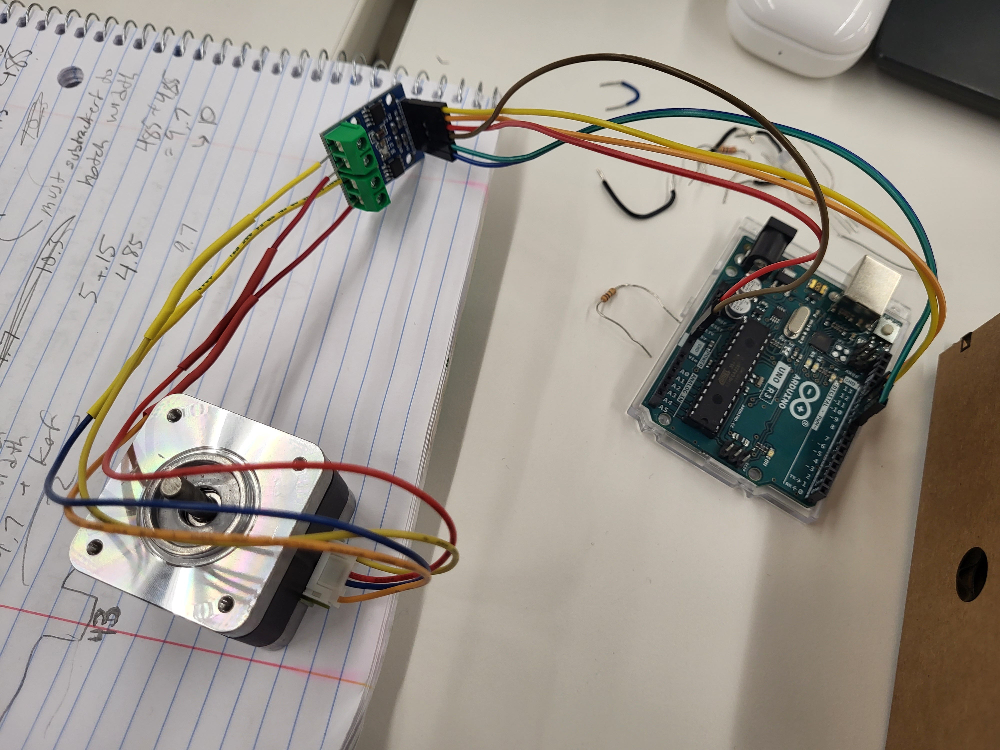
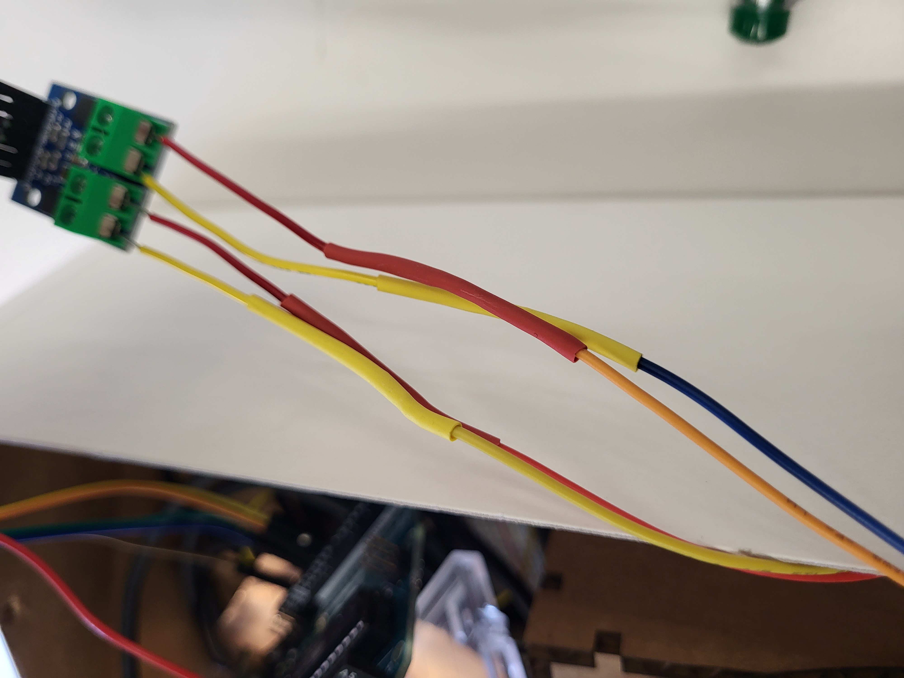
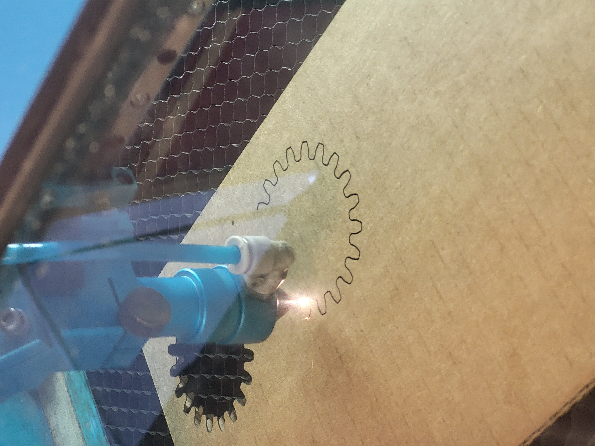
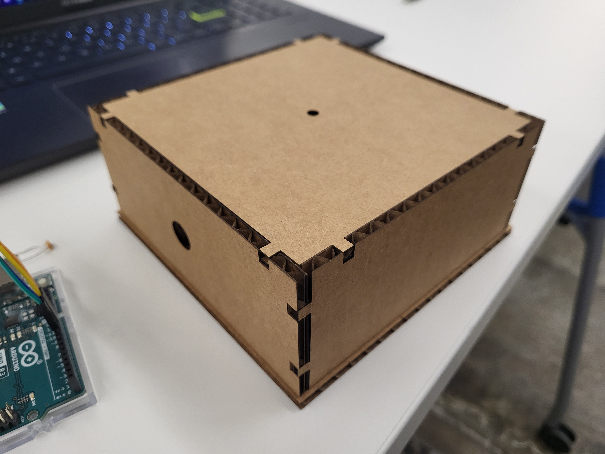
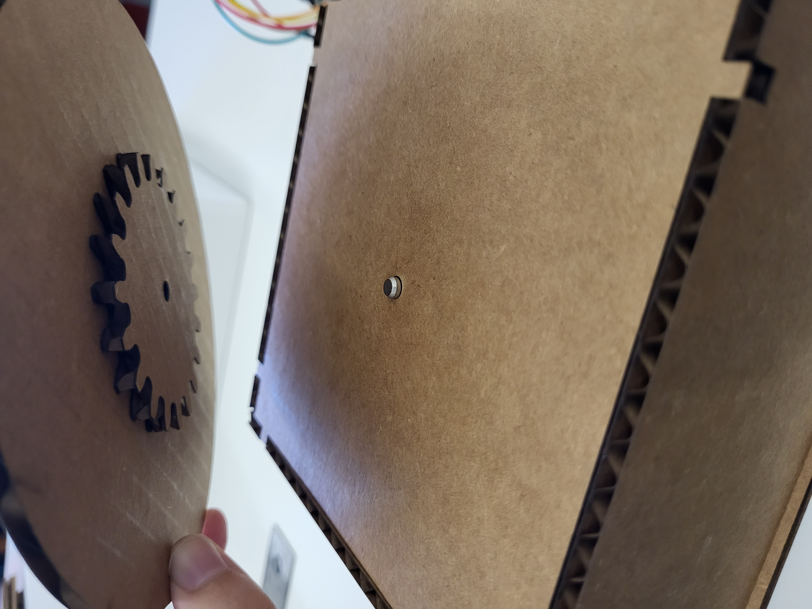
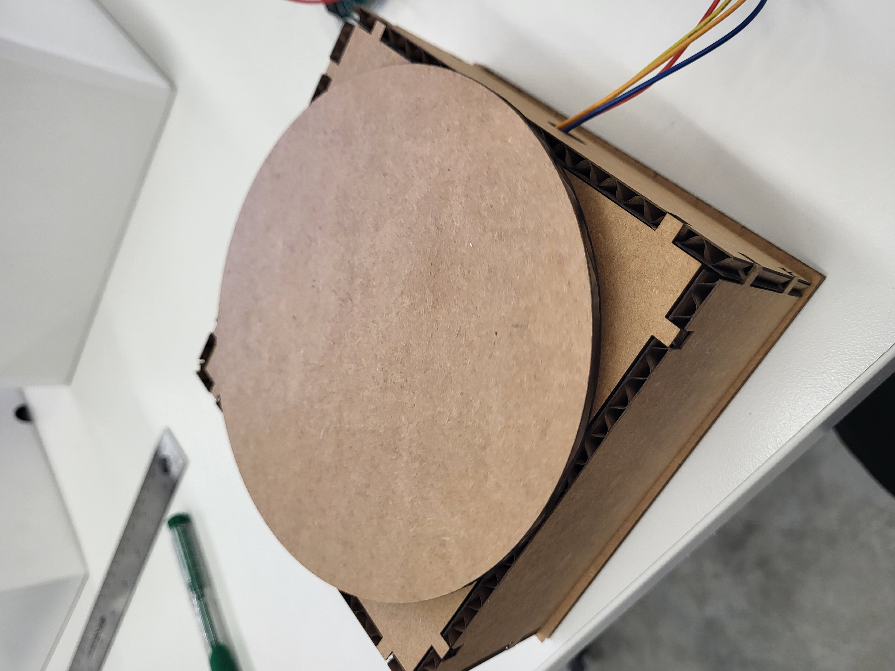

<br>
#### Week 10: Machine Building
<br>
This week, I constructed a turntable I could use for my final project.
<h5>Header</h5>
<br>
The first step was to wire up the stepper motor correctly. I did this using a L9110 motor driver, following the tutorials on the course website.
<br>

<br>
The wires were getting long and the joints were coming apart a lot, so I used heatshrink to connect some wires that didn't want to stay together.
<br>

<br>
In order to make the turntable, I had to laser cut a bunch of materials. I created a box to hide the stepper motor and wiring underneath the turntable platform. It was a modified version of the box I created in Week 3, except this time I actually accounted for kerf correctly and things fit together much better, and I added holes to let the wires exit out of the side of the box and to let the stepper motor pop out of the top of the box.
Here are some images of the laser cutting process and the box.
<br>

<br>

<br>
<h5>Code</h5>
<br>
Here's the code I used to move the motor clockwise, step by step. The delay makes it so the motor steps once every 0.3 seconds and completes one full rotation every minute.
<pre><code class="language-arduino">
int Aplus = 11;
int Aminus = 10;
int Bplus = 9;
int Bminus = 8;
uint16_t step_count = 0;
void setup() {
pinMode(Aplus, OUTPUT);
pinMode(Aminus, OUTPUT);
pinMode(Bplus, OUTPUT);
pinMode(Bminus, OUTPUT);
}
void pulse_0(){
digitalWrite(Aplus,1);
digitalWrite(Bplus,1);
}
void pulse_1(){
digitalWrite(Aminus,1);
digitalWrite(Bplus,1);
}
void pulse_2(){
digitalWrite(Aminus,1);
digitalWrite(Bminus,1);
}
void pulse_3(){
digitalWrite(Aplus,1);
digitalWrite(Bminus,1);
}
void all_off() {
digitalWrite(Aplus,0);
digitalWrite(Aminus,0);
digitalWrite(Bplus,0);
digitalWrite(Bminus,0);
}
void loop() {
all_off(); // turn off coils before sending new step.
step_count++;
step_count = step_count%4;
if (step_count == 0) pulse_0();
if (step_count == 1) pulse_1();
if (step_count == 2) pulse_2();
if (step_count == 3) pulse_3();
delay(10); // too short and motor will skip steps
if (step_count == 3) {
delay(310);
}
}
</code></pre>
<br>
After getting the motor working, I tried to secure the gear and platform to the stepper motor axle. However, it was super hard to get it level.
I ended up supergluing the gear to the platform and placing that on top of the rotating motor, which worked miraculously leveled it out.
<br>

<br>
Here's the assembled turntable:
<br>

<br>
<br>
<h5>Turntable in action</h5>
Here's a video of the turntable in action:
<br>
<video width="800px" controls>
<source src="turntable-pencil.mp4" type="video/mp4">
</video>
And here's a video of my whale shark from Week 3 on the turntable. I think this is a much better kinetic sculpture than the one I did back in Week 3!
<video width="800px" controls>
<source src="whaleshark-turning.mp4" type="video/mp4">
</video>
<br>
<h5>Takeaways</h5>
<br>
The biggest issue I had with this was that the turntable stops moving with any significant weight placed on it, so this turntable wouldn't actually work for my final project if I want to put a plant on top of it.
I'm hoping to modify this design to look into ways to increase the torque so it can handle more weight. I also want to be able to change the direction of the turntable at fixed, longer intervals (2 days) in response to an input, like light values from a photoresistor.
<br>
Click [here](../index.html) to return to the homepage.